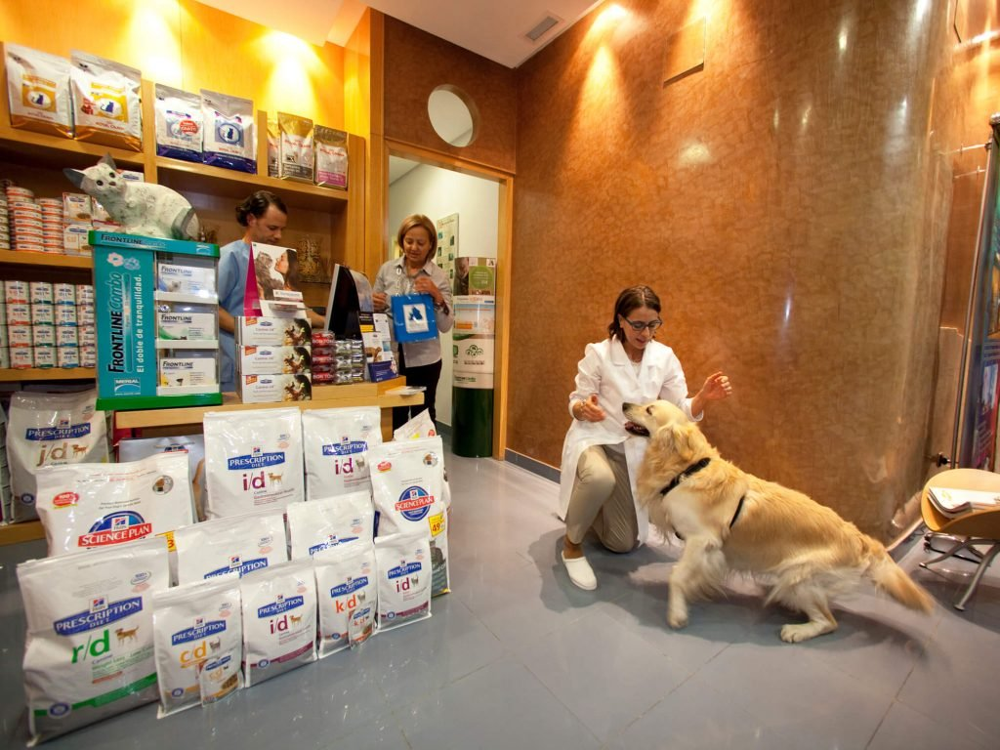

En VCA La Riviera Animal Medical Center, la salud de su mascota es nuestra máxima prioridad y nuestro objetivo es brindarle un servicio excelente. Esperamos darle la bienvenida a usted y a sus mascotas. Nuestros veterinarios, técnicos veterinarios y otro personal que se preocupa por las mascotas están capacitados según los estándares más altos. Su conocimiento de los últimos procedimientos y medicamentos veterinarios garantiza que su mascota recibirá la mejor atenci
VCA La Riviera Animal Medical Center es un centro médico veterinario de servicio completo ubicado en Sacramento, California, para perros, gatos, mascotas de bolsillo, conejos y reptiles. Nuestro personal veterinario profesional busca brindar excelencia en atención veterinaria a Sacramento y las áreas circundantes. Además de los servicios veterinarios generales, como exámenes de bienestar y vacunas, VCA La Riviera Animal Medical Center también cuenta con servicios veterinarios avanzados, como radiología digital, exámenes de bienestar, vacunas y paquetes para cachorros y gatitos nuevos.
